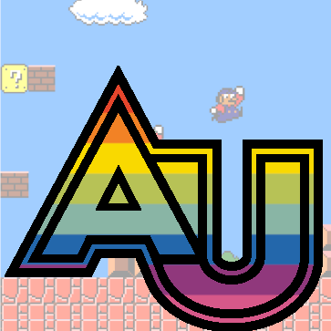

Learning with games
Keywords: games for learning, game design, serious games, simulations, multimedia learning, virtual reality, augmented reality
Educational Technology 0858-611
Instructor: Matthew X. Curinga mcuringa@adelphi.edu
Class sessions
Campus: Adelphi Manhattan Center Meeting time: Wednesday, 6:30-8:20 Location: Room 252

Description
Video games have become an increasingly important source of culture and entertainment in our society. They are more popular than Hollywood movies, yet receive a fraction of the attention, especially in academia. In recent years, this has been changing, as scholars have begun to interrogate games from many levels: design, critique, and as a means of learning. In this course, we really have 3 separate, but overlapping goals: 1) to understand video games as a social and cultural phenomenon, especially important to youth culture; 2) to think of ways to teach about video games, as part of a (digital) literacy perspective; and 3) to investigate ways to teach with games, both off the shelf and ones that we design ourselves.
Goals
The course has two main goals. Firstly, it introduces students to a range of game genres that have been popular in education. Secondly, it covers a range of learning principles, research topics, controversies, and potential applications for video games and simulations in education, and gives students the foundations for applying both analog and digital games in educational contexts.
By the end of the course, students should be able to:
- Understand major topics in educational games and simulations
- Situate video games and learning in its historical manifestations - military exercises, simulations, game theory, board games and digital (video) games
- Understand the difference between exogenous and endogenous games, and design a simple endogenous game that can be used to teach a specific topic
- Understand the key differences between popular game genres
- Analyze and reflect on the potential of existing games and their potential in educational contexts
Course Readings
There are no required books to purchase for this class. All readings and videos are available through the course website.
Arnseth, H. C. (2006). Learning to play or playing to learn: A critical account of the models of communication informing educational research on computer gameplay. Game Studies, 6(1), 1–11.
Becker, K. (2011). The magic bullet: A tool for assessing and evaluating learning potential in games. International Journal of Game-Based Learning (IJGBL), 1(1), 19–31.
Caillois, R. (1961). The definition of play. The Game Design Reader: A Rules of Play Anthology, 123–128.
Duke, R. D. (1974). Gaming: The Future’s Language. Sage Publications.
Foster, A., Mishra, P., & Koehler, M. (2011). Digital game analysis: Using the Technological Pedagogical Content Knowledge framework to determine the affordances of a game for learning. Learning to Play: Exploring the Future of Education with Video Games. New York: Peter Lang Publications.
Fullerton, T. (2019). Game design workshop: A playcentric approach to creating innovative games. AK Peters/CRC Press.
Gee, J. P. (2007). What Video Games Have to Teach Us About Learning and Literacy. St. Martin’s Griffin.
Huizinga, J. (2014). Homo Ludens: A Study of the Play-Element in Culture phone. Martino Fine Books.
Salen, K., Tekinbaş, K. S., & Zimmerman, E. (2004). Rules of play: Game design fundamentals. MIT press.
Selwyn, N. (2013). Distrusting ‘Games’ Technologies in Education. In Distrusting Educational Technology (pp. 96–116). Routledge.
Squire, K. (2006). From content to context: Videogames as designed experience. Educational Researcher, 35(8), 19–29.
Squire, K., & Jenkins, H. (2011). Video games and learning: Teaching and participatory culture in the digital age. Teachers College Press.
Zubek, R. (2020). Elements of game design. The MIT Press.
| Session | Date | Topic |
|---|---|---|
| 1 | Sep 01 | Intro |
| 2 | Sep 08 | Play I |
| 3 | Sep 15 | Learning I |
| 4 | Sep 22 | Design I |
| 5 | Sep 29 | Deep play I |
| 6 | Oct 06 | Design II |
| 7 | Oct 13 | Learning II |
| 8 | Oct 20 | Prototyping |
| 9 | Oct 27 | Analysis I |
| 10 | Nov 03 | Play test I |
| 11 | Nov 10 | Analysis II |
| 12 | Nov 17 | Deep play II |
| - | Nov 24 | Thanksgiving Break |
| 13 | Dec 01 | Functionality |
| 14 | Dec 08 | Play test 2 |
| 15 | Dec 15 | Finals week: design doc due |
Assignments & Grading
due dates and grading
| assignment | due | pct |
|---|---|---|
| Game study post 1 | Sep 29 | 6% |
| Game study post 2 | Oct 20 | 7% |
| Game study post 3 | Nov 17 | 7% |
| Game Analysis | Nov 23 | 40% |
| Game Design | Dec 15 | 40% |
Game study posts (20 points)
One of our goals for this course is to turn a critical eye towards games so that we can gain a better understanding of how they work, when they work, and what their possibilities are. This skill helps us to design our own game/play activities, to understand how to incorporate game for teaching, and to appreciate the role that games play in our society.
For this assignment, write 3 posts in the “Game Studies” forum on our class website. Before you post, play a game for at least an hour. Write a 500 word post on the forum (as a new topic, with its own title). The post should not be a book report! Do not recap the entire game. Do not summarize the rules. Do have a specific, interesting point that you want to make. You might describe a game play experience in detail and then discuss it. You might look at a specific mechanic. You may consider how the game can work for teaching and learning. Mostly, you want to try hard to make your post something that we all want to read and that offers new knowledge to the class. Some examples might be: “One night ultimate werewolf: why lying is so much fun,” “Animal Crossing and Pandemic Boredom,” or “Valorant defusing strategies when you’re the last player.”
Your post should offer a brief description of the game (with links as needed) before you move to your thesis. You should draw on the techniques and theories in our readings to bolster your argument. Discuss how the game “works” (mechanics, rules, components, user experience, art); where it fits in the field (is it groundbreaking? does it draw on and improve other games? is it a rip off of a better game?); and any critical analysis of the game (who is the expected “audience” of the game? does the game trade in stereotypes?). As needed, use photos, screenshots, videos, etc to illustrate your points.
Forum rules:
- Post 3 times, once between weeks 1-4, once 5-8, and the final one between 9-12.
- Any type of game can work. Consider mixing up the types/genres for your posts.
- Read every post. Comment liberally. Don’t just say, “I really like what you wrote.”
- excellent (6-7 points): post is unique and interesting, it’s well written and edited, arguments show reflection and integration of the course discussions and readings, discussion is supported logically and by close examples from the game.
- good (4-5 points): meets all of the criteria as above, but may have minor flaws in editing or supporting arguments.
- satisfactory (3 points): either the writing and examples are not clear enough to fully support the argument, or the arguments don’t reflect the course readings or exhibit other clear flaws
- poor (0-2 points): the post fails to meet the basic criteria for the assignment
Game for learning analysis video (40 points)
Commercial games can have great potential for classroom teaching, even if they were not designed specifically for that purpose. For this assignment, you will gain extensive familiarity with a game in order to analyze its potential for use in the classroom. You may choose an analog game (e.g. chess, Settlers of Catan, Pandemic, Wingspan) or digital game (e.g. Minecraft, Civilization, Valorant, Animal Crossing) for your analysis.
Your analysis will take the form of a video where you consider the structure of the game and its suitability for teaching and learning. In terms of structure, refer to our course readings and your own research to analyze aspects such as game mechanics, player experience, etc. When you discuss the potential for learning, consider the classroom context where it can be effective, how it aligns with learning goals, and any modifications that you would have to make to the game structure to adapt it for classroom use.
Your video should include images or video of the game to illustrate your key points. In your narration, please make specific references to the readings you are referencing (include direct quotes if needed). You should have a list of references at the end of your video and submitted as notes with your assignment. You can check out samples of video game reviews on the Internet. For example, see The Last of Us, What Remains of Edith Finch (note: Your review will not have to be that long!). Your analysis should be well-edited and narrated, and run for 4-5 minutes.
The grade for your analysis will consider:
- 5 points: production quality of the video
- 10 points: analysis of mechanics
- 10 points: analysis of user experience/social connections
- 10 points: analysis of learning sciences/games for learning principles
- 5 points: instructional design of possible teaching implementation
Game design (40 points)
The third major grade will come from a game that you will design, either on your own or with a partner. This game can be analog (e.g., board game, card game, physical game, etc.) or digital games. It must have an educational component to it and it should encompass some of the aspects of game design that we will discuss. For the purposes of this assignment, I am more interested in the process you go through in designing this game than the final product. This process will include two play-testing sessions during our in-person classes, during which you will let your classmates test out the game, give you feedback, and use that feedback for further revisions. Your final product will also be evaluated on 1) how educational it is; 2) how clear the rules and guidelines are; 3) how well it incorporates good design principles and 4) how well you present it. We will be using various techniques for rapid prototyping and testing, whether creating a digital or analog game. By the end of the term, you must have a playable prototype that has gone through several iterations.
During the first half of the semester we will look at two technologies that can be used to teach game design and technology skills to students: Scratch and Twine. Scratch is a drag-and-drop block based programming language that is often used as a first introduction to computer programming, often by having students create simple arcade style games. Twine is a platform for creating “interactive fiction,” and can create game-like experiences with little or no programming. (We can discuss if IF are games or not, but for this assignment interactive fiction will count as a game.) If you choose to use Scratch or Twine for this project, you will be able to create a working, digital prototype of your game. You are, however, allowed to design a digital game without writing any code. For example, you could design a virtual reality game or augmented reality game which we will test only through role playing and paper prototypes.
Your game design document will be scored:
- 10 points: educational purpose and foundation
- 5 points: play test 1
- 5 points: play test 2
- 10 points: game design (rules, mechanics, components, art, etc)
- 5 points: implementation
- 5 points: reflection